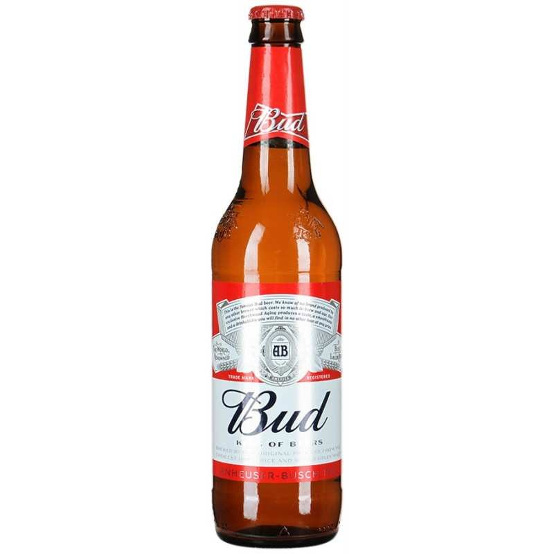

Светлое пиво - это пиво, в котором дрожжи больше не находятся в суспензии.
Существует несколько методов, используемых для очистки пива от дрожжей, от ожидания, пока дрожжи выпадут сами по себе ("выпадение светлого"), до его фильтрации.
Светлое пиво мне нравится больше, потому что оно мягче и приятнее на вкус.